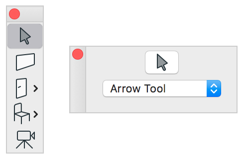
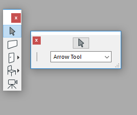

Palette dialogs
A palette dialog can be used to display information or options while the user works in another dialog or window. A palette dialog contains dialog items with which the user can enter text, choose options, or direct actions. A palette dialog allows the user to supply information and return to the previous task without closing the dialog. Applications that use palette dialogs typically create one when the user select a menu item and continue to display it for as long as the application runs or until the user explicitly closes the dialog.
Palette dialogs are similar to modeless dialogs. However, there are some differences between them, among which the most important is that palette dialogs are always positioned in front of other windows and modeless dialogs of the application. This means that the last palette always precedes the first modeless dialog in the queue of the modeless and palette dialogs. This is why they can also be referred to as floating palettes. To achieve this behavior on Macintosh you have to handle every window with the WM routines instead of the system's Window Manager routines. (WM is a special window manager shipped with the DG dialog manager on the Macintosh.)
There are two methods to create palette dialogs. To create a palette dialog which is defined in resource script the application must supply a GDLG resource in a GRC file to describe the dimensions, style and content of the dialog. The application must also supply a dialog callback function to carry out the dialog related tasks. The application can create the dialog by using the DGModelessInit, the DGCreatePalette or the DGCreateDockablePalette function. These functions load the GDLG resource of the dialog and create the dialog window and the dialog items matching the resource specifications. The application can use the DGCreateBlankPalette or the DGCreateBlankDockablePalette function also. This function does not use resource. It creates a blank palette dialog from program code. The application can append dialog items on dialogs with the DGAppendDialogItem function independently of the creation method.
After the palette dialog is created, the application is responsible for retrieving and dispatching input messages to the dialog. Most applications use the main message loop for this. The application should call the DGModelessHandler function just after receiving a system-specific message in the main message loop. DGModelessHandler converts the system-specific messages into DG messages and sends them to the dialog callback function of the appropriate palette or modeless dialog. DGModelessHandler also provides the usual dialog keyboard interface for palette dialogs.
Palette dialogs can provide context-sensitive help for their dialog items. A dialog item can have two types of help information: a tooltip and an anchor to a separate detailed information. On Macintosh, the short one is displayed in a balloon help if this feature is enabled through the Macintosh system Help menu. On Windows, the usual tooltips serve to show the short item help. Tooltips are displayed only if they are enabled. When DG is initialized, tooltips are automatically enabled. Use DGDisableToolTips to disable displaying tooltips and DGEnableToolTips to enable them again. The detailed version of the item help can be invoked by setting the keyboard focus to a focusable dialog item then pressing the [F1] key on Windows or [Help] key on Macintosh; or by clicking the right mouse button on the item.
The tooltips and the help anchor strings are defined in DLGH resources. The resource ID of the DLGH resource should be the same as the resource ID of the dialog's GDLG resource.
A palette dialog always has a thin caption which can be on the top or on the left side of the dialog. The top caption can contain a title drawn with the small plain font of DG. On Macintosh, there is a collapse box and optionally a close box in the caption. On Windows, the caption can contain a close box only. If the dialog is growable, a small size box appears in the lower right corner of the dialog on Macintosh. On Windows, a thick frame indicates that the user can resize the dialog.
-
 
Dialog GRC Specification
'GDLG' resID Palette [| frameFlag | growFlag | captionFlag | closeFlag] x y dx dy "dlgTitle" {
dialogItem1
...
dialogItemi
...
dialogItemn
}
where resID is the resource ID of the palette dialog. The Palette keyword can be combined with the optional growFlag, captionFlag and closeFlag using the OR (|) operator. If these flags are omitted, a non-growable dialog is created with top caption and normal frame without close box. x and y are the pixel coordinates of the upper left corner of the dialog, dx and dy are the width and height of the dialog in pixels. dlgTitle defines the title of the dialog. dialogItemi (1 <= i <= n) specify n pieces of dialog items. For the GRC specifications of the various dialog items see the DG dialog items page.
Possible values of the frameFlag:
-
Value Meaning normalFrame The dialog has normal dialog frame. thickFrame The dialog has thick frame. noFrame The dialog has no frame.
Possible values of the growFlag:
-
Value Meaning noGrow The dialog cannot be sized. hGrow The dialog can be sized horizontally. vGrow The dialog can be sized vertically. grow The dialog can be sized in both directions.
Possible values of the captionFlag:
-
Value Meaning topCaption The caption is on the top of the dialog. leftCaption The caption is on the left side of the dialog. noCaption The dialog has no caption.
Possible values of the closeFlag:
-
Value Meaning noClose The dialog has no close box in the caption. close The dialog has close box in the caption.
Help GRC Specification
GRC Specification of the Dialog Helps.
Remarks
DGModelessInit returns immediately as soon as the palette dialog is created. If a palette dialog is created with zero show parameter, DGModelessInit does not show the dialog before it returns. Later you can show or hide the dialog by using the DGShowModelessDialog or DGHideModelessDialog functions, respectively. To test whether a palette dialog is visible call DGIsModelessDialogVisible.
If the show parameter is 1, DGModelessInit not only shows but also activates the palette dialog. The user or the application can change the active dialog at any time. Use DGActivateModelessDialog to activate a palette dialog from program code. When a palette dialog becomes active, its position in the queue of the modeless and palette dialogs is also changed. (This position is also known as Z order of the dialog.) If a palette is activated it becomes the frontmost dialog. Note that palette dialogs always precedes modeless dialogs in the Z order.
The DGCreatePalette, DGCreateBlankPalette and DGCreateDockablePalette functions do not begin the event processing and do not show the dialog.
DGModelessHandler handles dialog related messages for all the opened modeless and palette dialogs of the application. When the function is called from the application's main message loop, first it tests whether the retrieved system-specific message is a dialog message or not. If the message does not refer to a dialog, DGModelessHandler returns zero and the message has to be processed by the application. However, if the message refers to a dialog, DGModelessHandler converts it into a DG message and sends it to the appropriate modeless or palette dialog callback function. As soon as the message has been handled in a callback function DGModelessHandler returns 1. In this case the message does not need further processing, you have to continue with the next message.
Every modeless and palette dialog has a so called status flag. If this flag is DG_DS_NORMAL and the value of the onlyUpdate parameter of DGModelessHandler is 0, all messages are handled for the dialog. However, if onlyUpdate is 1, only the update messages are processed by DGModelessHandler. If the status flag is set to DG_DS_ENABLED, all messages are handled independently of the value of onlyUpdate. If the status flag is set to DG_DS_DISABLED, only the update messages are processed. The value of the status flag can be set and retrieved by DGSetModelessDialogStatus and DGGetModelessDialogStatus, respectively.
The usage of the dialog status flag can be explained by the following example. Suppose that an application begins a long process such as a time-consuming calculation. In this case, it is advisable to show a process indicator dialog with a Stop button until the calculation is finished. When handling system-specific messages during this period, you should call DGModelessHandler with onlyUpdate of value 1. This ensures that modeless dialogs of DG_DS_NORMAL state do not handle any messages except the update messages (this way they do not respond to any user actions). The status of the process indicator dialog should be set to DG_DS_ENABLED in order to enable the user to press the Stop button and cancel the process.
Palette dialogs can be closed by the DGModelessClose function, or by user actions. The user usually closes a palette dialog by clicking the Cancel button or the close box. The dialog callback function receives a DG_MSG_CLICK message with DG_CANCEL or DG_CLOSEBOX as the item parameter. The dialog is closed only if the callback function returns a non-zero value (typically DG_CANCEL or DG_CLOSEBOX) for the DG_MSG_CLICK message. If the user never closes some modeless and/or palette dialogs in this way, the application must close them before terminating by using the DGModelessClose function.
The application can use the DGDestroyPalette function to destroy the dialog, after the event processing was stopped. Use the DGEndProcessEvents function to stop event processing.
A palette dialog cannot return a value to the application as a modal dialog does, but the dialog callback function can send information to other modeless and palette dialogs by using the DGSendMessage function.